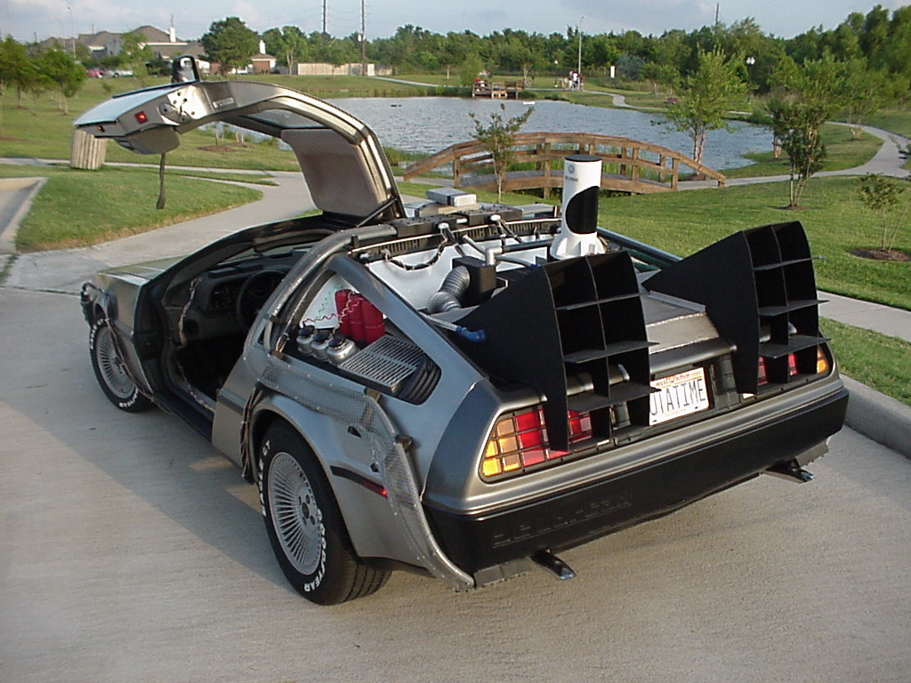

logstash
Jordan Sissel
logger @ DreamHost
I like to code

first principles
If a newbie has a bad time,
it is a bug.
agenda: logstash ops
- story time
- scaling logstash
- logstash ops
- elasticsearch ops
108.166.15.188 - - [13/Sep/2012:02:34:22 -0400] "GET /files/logstash/logstash-1.1.0-monolithic.jar HTTP/1.1" 200 40923996 "-" "Chef Client/0.10.8 (ruby-1.9.3-p0; ohai-0.6.10; x86_64-linux; +http://opscode.com)"
50.56.197.244 - - [13/Sep/2012:02:34:37 -0400] "GET / HTTP/1.1" 200 41687 "-" "Mozilla/4.0 (compatible; MSIE 5.0; Windows NT; DigExt; DTS Agent"
89.96.171.210 - - [13/Sep/2012:02:32:49 -0400] "GET /files/logstash/logstash-1.1.0-monolithic.jar HTTP/1.1" 200 40923996 "-" "Chef Client/0.10.10 (ruby-1.9.3-p194; ohai-0.6.4; amd64-freebsd8; +http://opscode.com)"
37.57.128.238 - - [13/Sep/2012:02:37:24 -0400] "GET / HTTP/1.1" 200 41687 "-" "Mozilla/4.0 (compatible; MSIE 5.0; Windows NT; DigExt; DTS Agent"
199.21.99.109 - - [13/Sep/2012:02:38:12 -0400] "GET /blog/tags/packaging HTTP/1.1" 200 15152 "-" "Mozilla/5.0 (compatible; YandexBot/3.0; +http://yandex.com/bots)"
180.76.6.232 - - [13/Sep/2012:02:38:23 -0400] "GET /blog/tags/wrt54gl HTTP/1.1" 200 8867 "-" "Mozilla/5.0 (compatible; Baiduspider/2.0; +http://www.baidu.com/search/spider.html)"
217.227.233.68 - - [13/Sep/2012:02:38:25 -0400] "GET /articles/ssh-security/ HTTP/1.1" 200 16543 "-" "Mozilla/5.0 (X11; Linux x86_64; rv:15.0) Gecko/20100101 Firefox/15.0"
217.227.233.68 - - [13/Sep/2012:02:38:26 -0400] "GET /reset.css HTTP/1.1" 200 1015 "http://www.semicomplete.com/articles/ssh-security/" "Mozilla/5.0 (X11; Linux x86_64; rv:15.0) Gecko/20100101 Firefox/15.0"
217.227.233.68 - - [13/Sep/2012:02:38:26 -0400] "GET /style2.css HTTP/1.1" 200 4877 "http://www.semicomplete.com/articles/ssh-security/" "Mozilla/5.0 (X11; Linux x86_64; rv:15.0) Gecko/20100101 Firefox/15.0"
217.227.233.68 - - [13/Sep/2012:02:38:26 -0400] "GET /images/jordan-80.png HTTP/1.1" 200 6146 "http://www.semicomplete.com/articles/ssh-security/" "Mozilla/5.0 (X11; Linux x86_64; rv:15.0) Gecko/20100101 Firefox/15.0"
217.227.233.68 - - [13/Sep/2012:02:38:31 -0400] "GET /images/web/2009/banner.png HTTP/1.1" 200 52315 "http://www.semicomplete.com/style2.css" "Mozilla/5.0 (X11; Linux x86_64; rv:15.0) Gecko/20100101 Firefox/15.0"
184.73.137.50 - - [13/Sep/2012:02:38:28 -0400] "GET /files/logstash/logstash-1.1.1-monolithic.jar HTTP/1.1" 200 53813805 "-" "Chef Client/0.10.8 (ruby-1.8.7-p334; ohai-0.6.10; i686-linux; +http://opscode.com)"
24.24.235.59 - - [13/Sep/2012:02:38:46 -0400] "GET /kibana/ HTTP/1.1" 200 4483 "http://news.ycombinator.com/item?id=4417660" "Mozilla/5.0 (Windows NT 6.1; WOW64) AppleWebKit/537.1 (KHTML, like Gecko) Chrome/21.0.1180.89 Safari/537.1"
24.24.235.59 - - [13/Sep/2012:02:38:46 -0400] "GET /kibana/bootstrap/css/bootstrap-responsive.min.css HTTP/1.1" 200 7680 "http://semicomplete.com/kibana/" "Mozilla/5.0 (Windows NT 6.1; WOW64) AppleWebKit/537.1 (KHTML, like Gecko) Chrome/21.0.1180.89 Safari/537.1"
24.24.235.59 - - [13/Sep/2012:02:38:46 -0400] "GET /kibana/css/style.css HTTP/1.1" 200 2715 "http://semicomplete.com/kibana/" "Mozilla/5.0 (Windows NT 6.1; WOW64) AppleWebKit/537.1 (KHTML, like Gecko) Chrome/21.0.1180.89 Safari/537.1"
24.24.235.59 - - [13/Sep/2012:02:38:46 -0400] "GET /kibana/css/jquery.ui.datepicker.css HTTP/1.1" 200 33035 "http://semicomplete.com/kibana/" "Mozilla/5.0 (Windows NT 6.1; WOW64) AppleWebKit/537.1 (KHTML, like Gecko) Chrome/21.0.1180.89 Safari/537.1"
24.24.235.59 - - [13/Sep/2012:02:38:46 -0400] "GET /kibana/js/lib/excanvas.min.js HTTP/1.1" 200 19415 "http://semicomplete.com/kibana/" "Mozilla/5.0 (Windows NT 6.1; WOW64) AppleWebKit/537.1 (KHTML, like Gecko) Chrome/21.0.1180.89 Safari/537.1"
24.24.235.59 - - [13/Sep/2012:02:38:46 -0400] "GET /kibana/bootstrap/css/bootstrap.min.css HTTP/1.1" 200 71463 "http://semicomplete.com/kibana/" "Mozilla/5.0 (Windows NT 6.1; WOW64) AppleWebKit/537.1 (KHTML, like Gecko) Chrome/21.0.1180.89 Safari/537.1"
24.24.235.59 - - [13/Sep/2012:02:38:46 -0400] "GET /kibana/js/lib/jquery.history.js HTTP/1.1" 200 6466 "http://semicomplete.com/kibana/" "Mozilla/5.0 (Windows NT 6.1; WOW64) AppleWebKit/537.1 (KHTML, like Gecko) Chrome/21.0.1180.89 Safari/537.1"
24.24.235.59 - - [13/Sep/2012:02:38:46 -0400] "GET /kibana/css/jquery-ui-1.8.16.custom.css HTTP/1.1" 200 50829 "http://semicomplete.com/kibana/" "Mozilla/5.0 (Windows NT 6.1; WOW64) AppleWebKit/537.1 (KHTML, like Gecko) Chrome/21.0.1180.89 Safari/537.1"
24.24.235.59 - - [13/Sep/2012:02:38:46 -0400] "GET /kibana/js/lib/jquery.flot.min.js HTTP/1.1" 200 37554 "http://semicomplete.com/kibana/" "Mozilla/5.0 (Windows NT 6.1; WOW64) AppleWebKit/537.1 (KHTML, like Gecko) Chrome/21.0.1180.89 Safari/537.1"
24.24.235.59 - - [13/Sep/2012:02:38:46 -0400] "GET /kibana/js/lib/jquery.flot.selection.min.js HTTP/1.1" 200 3532 "http://semicomplete.com/kibana/" "Mozilla/5.0 (Windows NT 6.1; WOW64) AppleWebKit/537.1 (KHTML, like Gecko) Chrome/21.0.1180.89 Safari/537.1"
24.24.235.59 - - [13/Sep/2012:02:38:46 -0400] "GET /kibana/js/lib/jquery.smartresize.js HTTP/1.1" 200 1123 "http://semicomplete.com/kibana/" "Mozilla/5.0 (Windows NT 6.1; WOW64) AppleWebKit/537.1 (KHTML, like Gecko) Chrome/21.0.1180.89 Safari/537.1"
24.24.235.59 - - [13/Sep/2012:02:38:46 -0400] "GET /kibana/js/lib/iso8601.min.js HTTP/1.1" 200 486 "http://semicomplete.com/kibana/" "Mozilla/5.0 (Windows NT 6.1; WOW64) AppleWebKit/537.1 (KHTML, like Gecko) Chrome/21.0.1180.89 Safari/537.1"
24.24.235.59 - - [13/Sep/2012:02:38:46 -0400] "GET /kibana/js/lib/safebase64.js HTTP/1.1" 200 3264 "http://semicomplete.com/kibana/" "Mozilla/5.0 (Windows NT 6.1; WOW64) AppleWebKit/537.1 (KHTML, like Gecko) Chrome/21.0.1180.89 Safari/537.1"
24.24.235.59 - - [13/Sep/2012:02:38:46 -0400] "GET /kibana/js/lib/jquery.min.js HTTP/1.1" 200 93868 "http://semicomplete.com/kibana/" "Mozilla/5.0 (Windows NT 6.1; WOW64) AppleWebKit/537.1 (KHTML, like Gecko) Chrome/21.0.1180.89 Safari/537.1"
24.24.235.59 - - [13/Sep/2012:02:38:47 -0400] "GET /kibana/js/lib/json2.js HTTP/1.1" 200 17541 "http://semicomplete.com/kibana/" "Mozilla/5.0 (Windows NT 6.1; WOW64) AppleWebKit/537.1 (KHTML, like Gecko) Chrome/21.0.1180.89 Safari/537.1"
24.24.235.59 - - [13/Sep/2012:02:38:47 -0400] "GET /kibana/js/ajax.js HTTP/1.1" 200 37584 "http://semicomplete.com/kibana/" "Mozilla/5.0 (Windows NT 6.1; WOW64) AppleWebKit/537.1 (KHTML, like Gecko) Chrome/21.0.1180.89 Safari/537.1"
24.24.235.59 - - [13/Sep/2012:02:38:46 -0400] "GET /kibana/js/lib/jquery-ui-timepicker-addon.js HTTP/1.1" 200 50902 "http://semicomplete.com/kibana/" "Mozilla/5.0 (Windows NT 6.1; WOW64) AppleWebKit/537.1 (KHTML, like Gecko) Chrome/21.0.1180.89 Safari/537.1"
24.24.235.59 - - [13/Sep/2012:02:38:46 -0400] "GET /kibana/js/lib/jquery.ui.datepicker.js HTTP/1.1" 200 76332 "http://semicomplete.com/kibana/" "Mozilla/5.0 (Windows NT 6.1; WOW64) AppleWebKit/537.1 (KHTML, like Gecko) Chrome/21.0.1180.89 Safari/537.1"
24.24.235.59 - - [13/Sep/2012:02:38:47 -0400] "GET /kibana/bootstrap/js/bootstrap-dropdown.js HTTP/1.1" 200 2558 "http://semicomplete.com/kibana/" "Mozilla/5.0 (Windows NT 6.1; WOW64) AppleWebKit/537.1 (KHTML, like Gecko) Chrome/21.0.1180.89 Safari/537.1"
24.24.235.59 - - [13/Sep/2012:02:38:47 -0400] "GET /kibana/bootstrap/js/bootstrap.js HTTP/1.1" 200 47395 "http://semicomplete.com/kibana/" "Mozilla/5.0 (Windows NT 6.1; WOW64) AppleWebKit/537.1 (KHTML, like Gecko) Chrome/21.0.1180.89 Safari/537.1"
24.24.235.59 - - [13/Sep/2012:02:38:47 -0400] "GET /kibana/js/lib/jquery.ui.accordion.js HTTP/1.1" 200 16265 "http://semicomplete.com/kibana/" "Mozilla/5.0 (Windows NT 6.1; WOW64) AppleWebKit/537.1 (KHTML, like Gecko) Chrome/21.0.1180.89 Safari/537.1"
24.24.235.59 - - [13/Sep/2012:02:38:46 -0400] "GET /kibana/js/lib/jquery-ui-1.8.16.custom.min.js HTTP/1.1" 200 196695 "http://semicomplete.com/kibana/" "Mozilla/5.0 (Windows NT 6.1; WOW64) AppleWebKit/537.1 (KHTML, like Gecko) Chrome/21.0.1180.89 Safari/537.1"
24.24.235.59 - - [13/Sep/2012:02:38:47 -0400] "GET /kibana/loader2.php?page=eyJzZWFyY2giOiIiLCJmaWVsZHMiOlsiIl0sIm9mZnNldCI6MCwidGltZWZyYW1lIjoiNDggaG91cnMiLCJncmFwaG1vZGUiOiJjb3VudCIsInN0YW1wIjoxMzQ1NjQ3NjQ3ODU5fQ==&_=1347518472674 HTTP/1.1" 200 576 "http://semicomplete.com/kibana/" "Mozilla/5.0 (Windows NT 6.1; WOW64) AppleWebKit/537.1 (KHTML, like Gecko) Chrome/21.0.1180.89 Safari/537.1"
24.24.235.59 - - [13/Sep/2012:02:38:47 -0400] "GET /kibana/images/logo.png HTTP/1.1" 200 1051 "http://semicomplete.com/kibana/" "Mozilla/5.0 (Windows NT 6.1; WOW64) AppleWebKit/537.1 (KHTML, like Gecko) Chrome/21.0.1180.89 Safari/537.1"
24.24.235.59 - - [13/Sep/2012:02:38:47 -0400] "GET /kibana/css/images/ui-icons_222222_256x240.png HTTP/1.1" 200 4369 "http://semicomplete.com/kibana/" "Mozilla/5.0 (Windows NT 6.1; WOW64) AppleWebKit/537.1 (KHTML, like Gecko) Chrome/21.0.1180.89 Safari/537.1"
24.24.235.59 - - [13/Sep/2012:02:38:47 -0400] "GET /kibana/images/kibana_banner.png HTTP/1.1" 200 16930 "http://semicomplete.com/kibana/" "Mozilla/5.0 (Windows NT 6.1; WOW64) AppleWebKit/537.1 (KHTML, like Gecko) Chrome/21.0.1180.89 Safari/537.1"
24.24.235.59 - - [13/Sep/2012:02:38:47 -0400] "GET /kibana/images/feed.png HTTP/1.1" 200 689 "http://semicomplete.com/kibana/" "Mozilla/5.0 (Windows NT 6.1; WOW64) AppleWebKit/537.1 (KHTML, like Gecko) Chrome/21.0.1180.89 Safari/537.1"
24.24.235.59 - - [13/Sep/2012:02:38:47 -0400] "GET /kibana/images/csv.gif HTTP/1.1" 200 154 "http://semicomplete.com/kibana/" "Mozilla/5.0 (Windows NT 6.1; WOW64) AppleWebKit/537.1 (KHTML, like Gecko) Chrome/21.0.1180.89 Safari/537.1"
24.24.235.59 - - [13/Sep/2012:02:38:47 -0400] "GET /kibana/images/stream.png HTTP/1.1" 200 569 "http://semicomplete.com/kibana/" "Mozilla/5.0 (Windows NT 6.1; WOW64) AppleWebKit/537.1 (KHTML, like Gecko) Chrome/21.0.1180.89 Safari/537.1"
24.24.235.59 - - [13/Sep/2012:02:38:47 -0400] "GET /kibana/images/ajax-loader.gif HTTP/1.1" 200 723 "http://semicomplete.com/kibana/" "Mozilla/5.0 (Windows NT 6.1; WOW64) AppleWebKit/537.1 (KHTML, like Gecko) Chrome/21.0.1180.89 Safari/537.1"
24.24.235.59 - - [13/Sep/2012:02:38:47 -0400] "GET /kibana/favicon.ico HTTP/1.1" 200 4286 "-" "Mozilla/5.0 (Windows NT 6.1; WOW64) AppleWebKit/537.1 (KHTML, like Gecko) Chrome/21.0.1180.89 Safari/537.1"
24.24.235.59 - - [13/Sep/2012:02:38:55 -0400] "GET /kibana/loader2.php?page=eyJzZWFyY2giOiIiLCJmaWVsZHMiOlsiIl0sIm9mZnNldCI6MCwidGltZWZyYW1lIjoiYWxsIiwiZ3JhcGhtb2RlIjoiY291bnQiLCJzdGFtcCI6MTM0NzUxODQ4MDExOX0=&_=1347518480123 HTTP/1.1" 200 580 "http://semicomplete.com/kibana/" "Mozilla/5.0 (Windows NT 6.1; WOW64) AppleWebKit/537.1 (KHTML, like Gecko) Chrome/21.0.1180.89 Safari/537.1"
24.24.235.59 - - [13/Sep/2012:02:38:56 -0400] "GET /kibana/loader2.php?page=eyJzZWFyY2giOiIiLCJmaWVsZHMiOlsiIl0sIm9mZnNldCI6MCwidGltZWZyYW1lIjoiNDggaG91cnMiLCJncmFwaG1vZGUiOiJjb3VudCIsInN0YW1wIjoxMzQ1NjQ3NjQ3ODU5fQ==&_=1347518481745 HTTP/1.1" 200 576 "http://semicomplete.com/kibana/" "Mozilla/5.0 (Windows NT 6.1; WOW64) AppleWebKit/537.1 (KHTML, like Gecko) Chrome/21.0.1180.89 Safari/537.1"
50.19.56.78 - - [13/Sep/2012:02:38:54 -0400] "GET /files/logstash/logstash-1.1.1-monolithic.jar HTTP/1.1" 200 53813805 "-" "Chef Client/0.10.8 (ruby-1.8.7-p334; ohai-0.6.12; i686-linux; +http://opscode.com)"
178.1.226.1 - - [13/Sep/2012:02:39:23 -0400] "GET /favicon.ico HTTP/1.1" 200 3638 "-" "Mozilla/5.0 (X11; Ubuntu; Linux x86_64; rv:15.0) Gecko/20100101 Firefox/15.0.1"
108.166.15.188 - - [13/Sep/2012:02:40:07 -0400] "GET /files/logstash/logstash-1.1.0-monolithic.jar HTTP/1.1" 200 40923996 "-" "Chef Client/0.10.8 (ruby-1.9.3-p0; ohai-0.6.10; x86_64-linux; +http://opscode.com)"
74.125.183.29 - - [13/Sep/2012:02:40:15 -0400] "GET /?flav=rss20 HTTP/1.1" 200 32996 "-" "FeedBurner/1.0 (http://www.FeedBurner.com)"
178.77.103.6 - - [13/Sep/2012:02:40:16 -0400] "GET /blog HTTP/1.1" 200 41691 "-" "Tiny Tiny RSS/1.5.5 (http://tt-rss.org/)"
174.37.213.34 - - [13/Sep/2012:02:40:48 -0400] "GET /blog HTTP/1.1" 200 41691 "-" "Mozilla/5.0 (X11; U; Linux x86_64; en-US; rv:1.9.0.19; aggregator:Spinn3r (Spinn3r 3.1); http://spinn3r.com/robot) Gecko/2010040121 Firefox/3.0.19"
50.16.86.251 - - [13/Sep/2012:02:40:51 -0400] "GET /files/logstash/logstash-1.1.1-monolithic.jar HTTP/1.1" 200 53813805 "-" "Chef Client/0.10.8 (ruby-1.8.7-p334; ohai-6.14.0; i686-linux; +http://opscode.com)"
(?<a0>(?<a1>(?<a2>\b(?:Jan(?:uary)?|Feb(?:ruary)?|Mar(?:ch)?|Apr(?:il)?|May|Jun(?:e)?|Jul(?:y)?|Aug(?:ust)?|Sep(?:tember)?|Oct(?:ober)?|Nov(?:ember)?|Dec(?:ember)?)\b) +(?<a3>(?:(?:0[1-9])|(?:[12][0-9])|(?:3[01])|[1-9])) (?<a4>(?!<[0-9])(?<a5>(?:2[0123]|[01][0-9])):(?<a6>(?:[0-5][0-9]))(?::(?<a7>(?:(?:[0-5][0-9]|60)(?:[.,][0-9]+)?)))(?![0-9]))) (?<a8>(?:(?<a9>\b(?:[0-9A-Za-z][0-9A-Za-z-]{0,62})(?:\.(?:[0-9A-Za-z][0-9A-Za-z-]{0,62}))*(\.?|\b))|(?<a10>(?<![0-9])(?:(?:25[0-5]|2[0-4][0-9]|[0-1]?[0-9]{1,2})[.](?:25[0-5]|2[0-4][0-9]|[0-1]?[0-9]{1,2})[.](?:25[0-5]|2[0-4][0-9]|[0-1]?[0-9]{1,2})[.](?:25[0-5]|2[0-4][0-9]|[0-1]?[0-9]{1,2}))(?![0-9])))) (?<a11>(?<a12>(?:[\w._/%-]+))(?:\[(?<a13>\b(?:[1-9][0-9]*)\b)\])?): (?<a14>(?<![0-9])(?:(?:25[0-5]|2[0-4][0-9]|[0-1]?[0-9]{1,2})[.](?:25[0-5]|2[0-4][0-9]|[0-1]?[0-9]{1,2})[.](?:25[0-5]|2[0-4][0-9]|[0-1]?[0-9]{1,2})[.](?:25[0-5]|2[0-4][0-9]|[0-1]?[0-9]{1,2}))(?![0-9])):(?<a15>(?:[+-]?(?:[0-9]+))) \[(?<a16>(?<a17>(?:(?:0[1-9])|(?:[12][0-9])|(?:3[01])|[1-9]))/(?<a18>\b(?:Jan(?:uary)?|Feb(?:ruary)?|Mar(?:ch)?|Apr(?:il)?|May|Jun(?:e)?|Jul(?:y)?|Aug(?:ust)?|Sep(?:tember)?|Oct(?:ober)?|Nov(?:ember)?|Dec(?:ember)?)\b)/(?<a19>[0-9]+):(?<a20>(?!<[0-9])(?<a21>(?:2[0123]|[01][0-9])):(?<a22>(?:[0-5][0-9]))(?::(?<a23>(?:(?:[0-5][0-9]|60)(?:[.,][0-9]+)?)))(?![0-9])).(?<a24>(?:[+-]?(?:[0-9]+))))\] (?<a25>\S+) (?<a26>\S+)/(?<a27>\S+) (?<a28>(?:[+-]?(?:[0-9]+)))/(?<a29>(?:[+-]?(?:[0-9]+)))/(?<a30>(?:[+-]?(?:[0-9]+)))/(?<a31>(?:[+-]?(?:[0-9]+)))/(?<a32>\S+) (?<a33>(?:[+-]?(?:[0-9]+))) (?<a34>\S+) (?<a35>.*?) (?<a36>.*?) (?<a37>\S+) (?<a38>(?:[+-]?(?:[0-9]+)))/(?<a39>(?:[+-]?(?:[0-9]+)))/(?<a40>(?:[+-]?(?:[0-9]+)))/(?<a41>(?:[+-]?(?:[0-9]+)))/(?<a42>\S+) (?<a43>(?:[+-]?(?:[0-9]+)))/(?<a44>(?:[+-]?(?:[0-9]+))) \{(?<a45>(?<a46>.*?))\} \{(?<a47>(?<a48>.*?))\} "(?<a49>\b\w+\b) (?<a50>(?<a51>(?:/[A-Za-z0-9$.+!*'(){},~:;=#%_-]*)+)(?:(?<a52>\?[A-Za-z0-9$.+!*'(){},~#%&/=:;_-]*))?) HTTP/(?<a53>(?:(?<a54>(?<![0-9.+-])(?>[+-]?(?:(?:[0-9]+(?:\.[0-9]+)?)|(?:\.[0-9]+))))))")

[image from zhatdoktah.tumblr.com]

maybe you want to search?

maybe you want analytics?

maybe you want analytics?
maybe you want analytics?

maybe you want a graph?
logs @ DreamHost
- Want customers to be happy
- Want employees to be happy
- Lots of servers
- Many different products
- Thousands of log sources
- Billions of events per day
familiar situation?
- Customer is having problems,
- logs are necessary for diagnosis,
- so Technical Support needs access,
- but Operations has access,
- but InfoSec policies restrict certain access.
- and then ...

inputs | filters | outputs
today: 30 inputs | 27 filters | 47 outputslet's pipe some events


example
→
→
→
→
→
→
→
→

→
→
→
→
→
→
→
→

Slow inputs?
Just add more workers!input {
amqp {
# Use 12 threads to read from amqp
threads => 12
...
}
}Slow filters?
Just add more workers!# Run 8 filter workers (default=1)
% logstash agent -w 8 -f logstash.confScale Transport: How
- Multiple readers
- Each output knows about all readers
Scale Transport (redis)
input {
redis { host => "redis1" ... }
redis { host => "redis2" ... }
redis { host => "redis3" ... }
}Scale Transport (redis)
output {
redis {
# One is chosen at random and used until
# failure. Then we choose again.
host => [ "redis1", "redis2", "redis3" ]
}
}Java is bloatware!
Java is slow!
We can't use java because ... computers!

[image from cargurus.com]
We've got to get back to 1985!
JVM: Bad Defaults
- Default max heap is 25% of physical memory
- Try `java -Xmx100m`
- Default GC will not free memory back to the host system.
Tracing events
input {
redis {
# Add our hostname to every event
# in the field "logstash"
add_field => [ "logstash",
"myhostname.example.com" ]
}
}
Watch live
output {
# Connect with a websocket client
websocket { ... }
# or with a tcp client (netcat!)
tcp { mode => server ... }
# or pubsub with zeromq
zeromq {
topology => pubsub
mode => server
}
}metrics filter
filter {
metrics {
# Counts events. Emits rates, etc.
meter => "events"
add_tag => "throughput"
}
}statsd output
output {
statsd {
# Increment a counter
increment => "events"
}
}other metric output
graphite, ganglia, librato, boundary,
circonus, cloudwatch, datadog, opentsdb, riemann
top -Hp logstashpid
(-H shows threads)PID USER PR ... %CPU %MEM TIME+ COMMAND 27641 logstash 20 ... 24 1.8 6:27.88 |worker.1 27643 logstash 20 ... 24 1.8 6:28.57 |worker.2 27640 logstash 20 ... 24 1.8 6:27.11 |worker.0 27842 logstash 20 ... 17 1.8 0:58.31 <lumberjack 27647 logstash 20 ... 17 1.8 4:51.72 >elasticsearch_ 27861 logstash 20 ... 11 1.8 0:28.36 <lumberjack 27648 logstash 20 ... 10 1.8 2:42.59 >websocket 27655 logstash 20 ... 10 1.8 3:52.39 <lumberjack 27711 logstash 20 ... 10 1.8 1:48.34 <lumberjack 27706 logstash 20 ... 4 1.8 0:43.54 <lumberjack
Multiple writers to a cluster
→
→
→
→
Cluster Metrics
% curl -s http://es:9200/_cluster/health
{
"cluster_name" : "elasticsearch",
"status" : "yellow",
"timed_out" : false,
"number_of_nodes" : 2,
"number_of_data_nodes" : 1,
"active_primary_shards" : 95,
"active_shards" : 95,
"relocating_shards" : 0,
"initializing_shards" : 0,
"unassigned_shards" : 95
}Index Metrics
% curl -s http://es:9200/_status
...
"indices" : {
"logstash-2013.03.12" : {
"index" : {
"primary_size" : "14.4mb",
"primary_size_in_bytes" : 15112895,
"size" : "14.4mb",
"size_in_bytes" : 15112895
},
...Process Metrics
% curl -s 'http://es:9200/_nodes/jvm/stats'
...
% curl -s 'http://es:9200/_nodes/os/stats'
...
% curl -s 'http://es:9200/_nodes/indices/stats'
...
% curl -s 'http://es:9200/_nodes/fs/stats'
...index.store.compress.stored: true
index.store.compress.tv: true